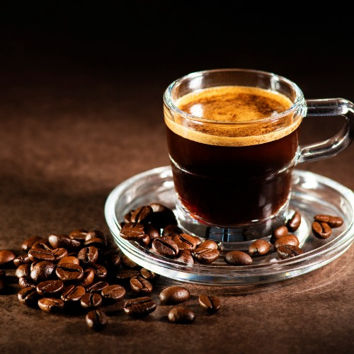
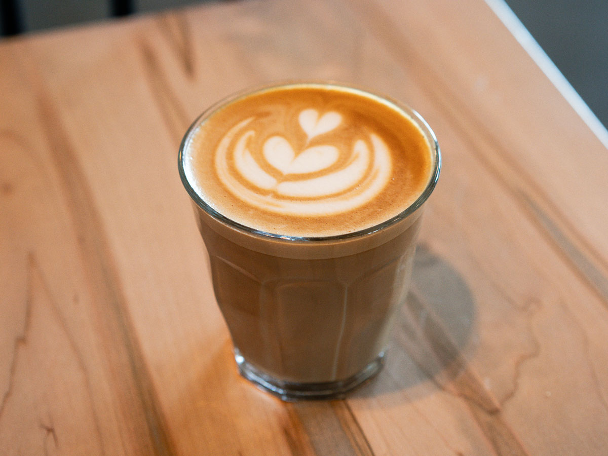
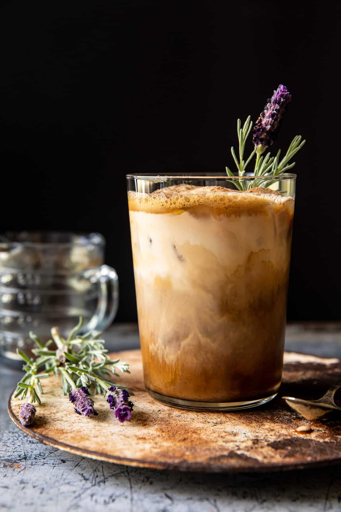
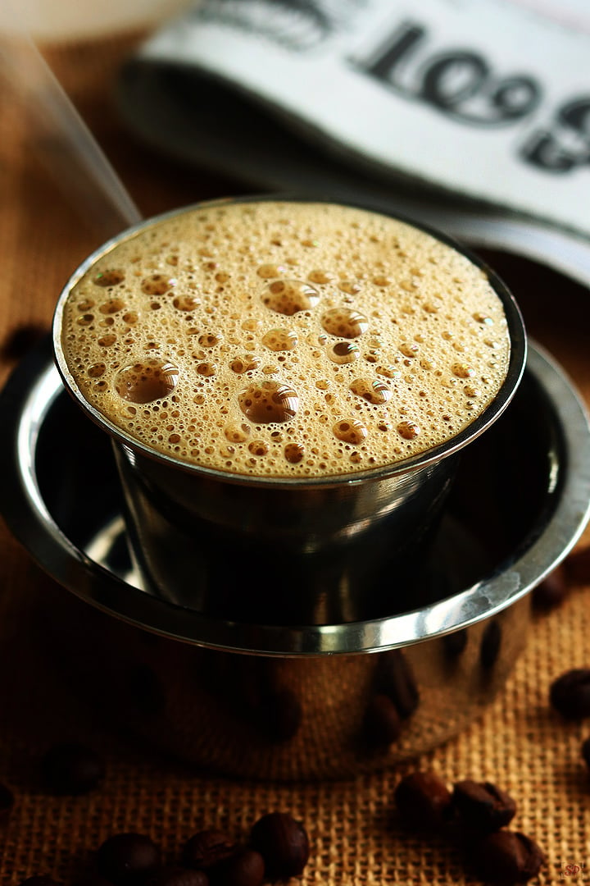
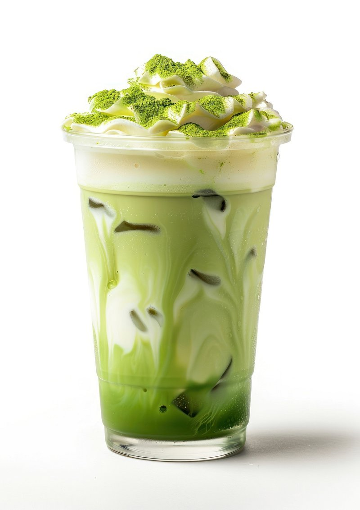
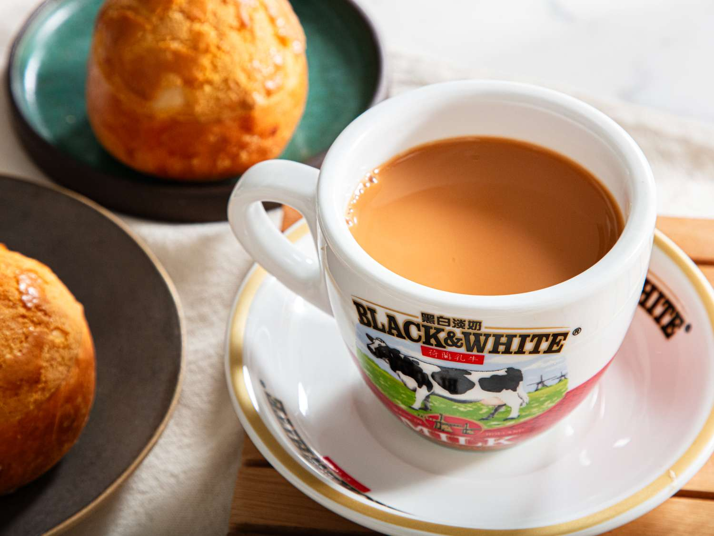
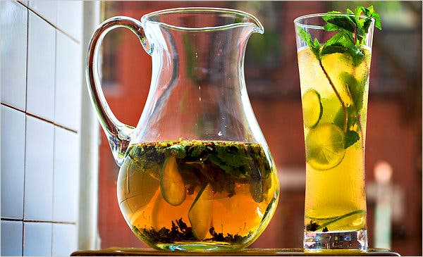
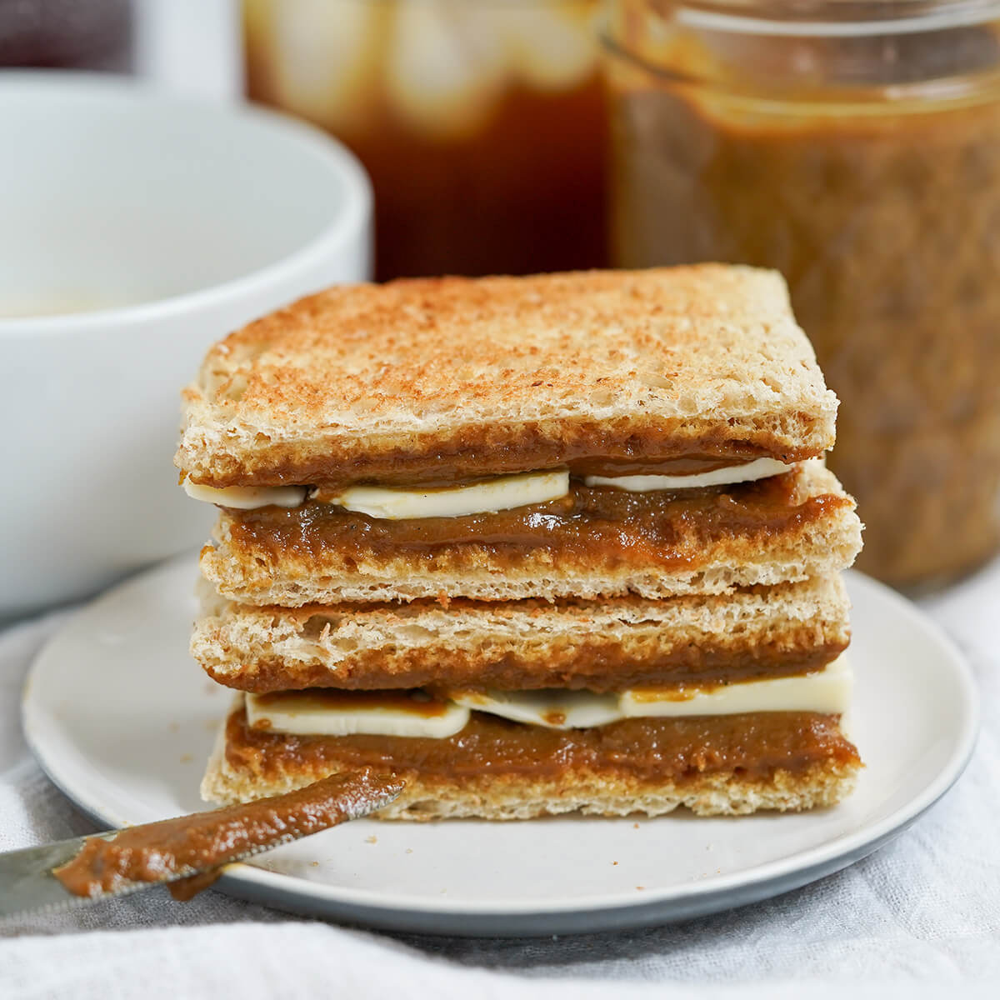
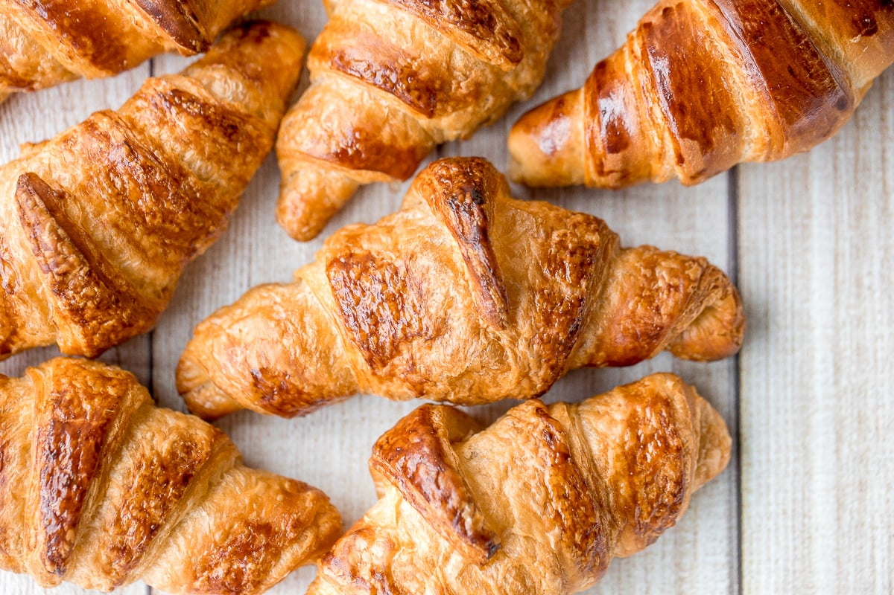
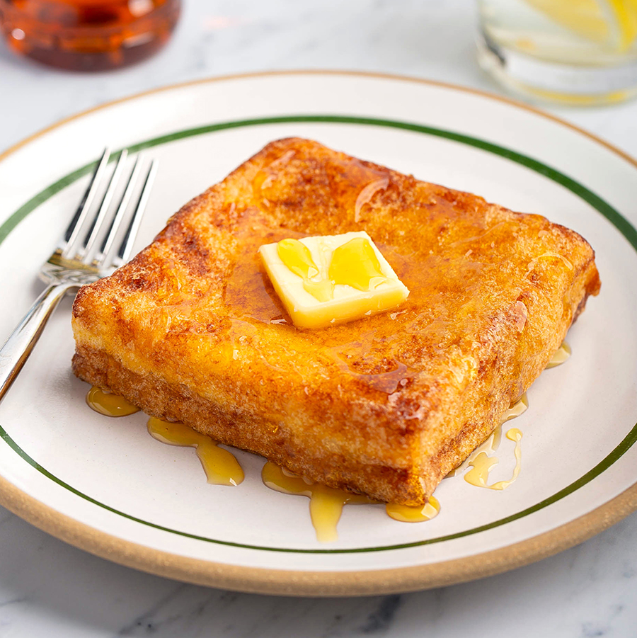

Espresso
A small cup with a bold personality
- Coffee
- Bold
CaffeineEspresso bar
Explore a sample of the Caffeine menu
Final drinks and prices are still brewing

A small cup with a bold personality

Espresso meets softly steamed milk

A slower sip for warmer afternoons

Take your time There’s more to taste

Earthy matcha softened with milk

My Home Flavor

Light cool and easy to linger over

A familiar Singapore-inspired pairing

Flaky layers for a coffee break

Toast and Syrup is the best combination